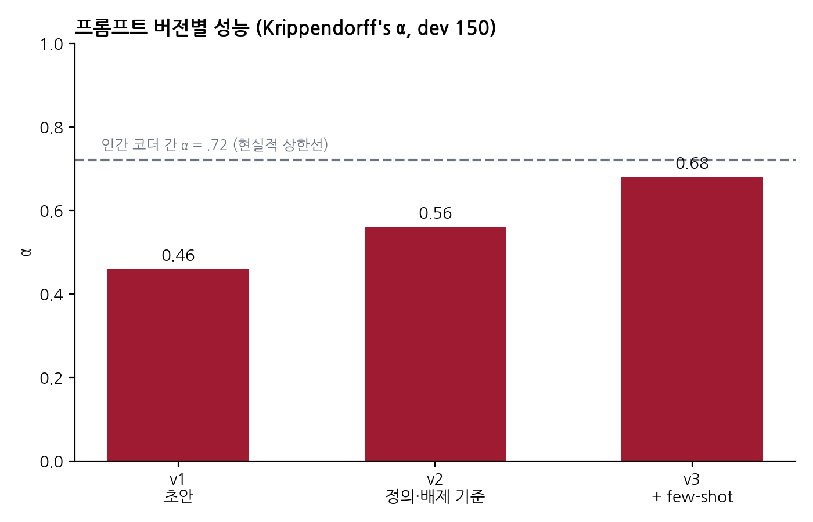
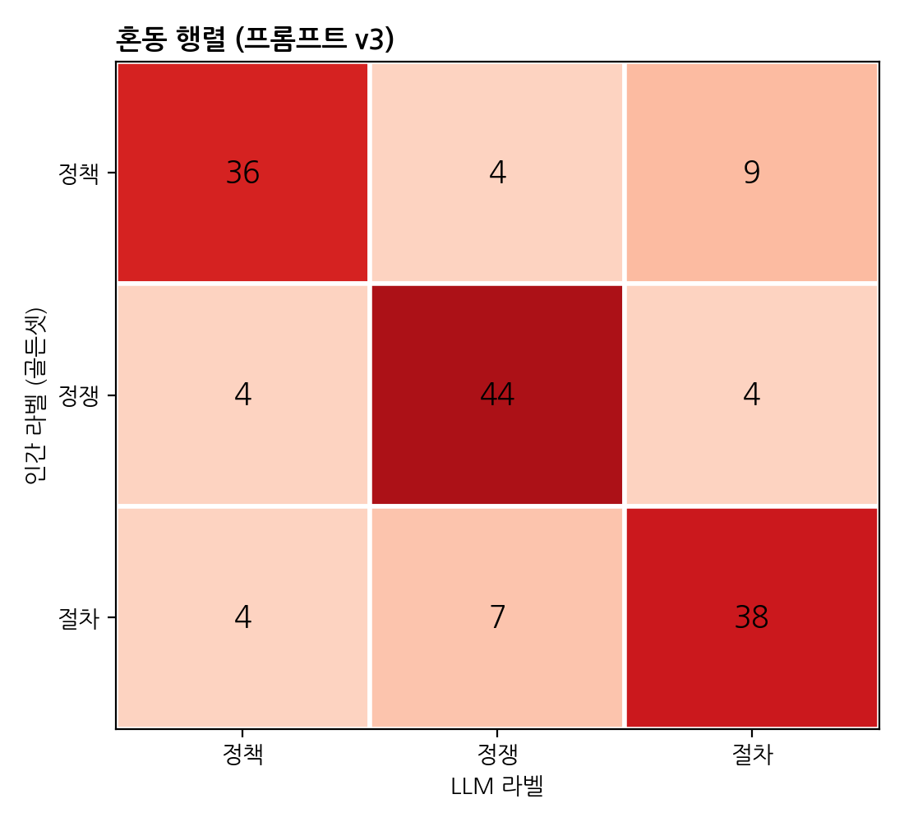
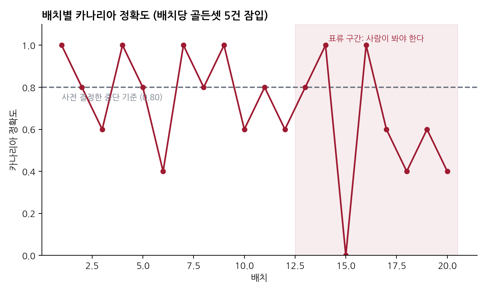

flowchart TB
subgraph H["하니스 (harness)"]
direction TB
subgraph ROW1[" "]
direction LR
P["프롬프트 ·<br/>컨텍스트 관리"] ~~~ T["도구 ·<br/>실행 환경"]
end
M["모델"]
subgraph ROW2[" "]
direction LR
V["검증 메커니즘<br/>골든셋 · 게이트"] ~~~ L["로깅 ·<br/>버전 관리"]
end
ROW1 --> M --> ROW2
ROW2 -->|"피드백"| ROW1
end
IN["과제"] --> H --> OUT["신뢰 가능한 산출물"]
classDef accent fill:#9E1B32,stroke:#9E1B32,color:#fff
class M accent
5장. Harness Engineering — AI를 신뢰 가능하게 만드는 구조
노트이 장에서 배우는 것
하니스(harness) — 모델을 둘러싼 실행 계층 — 의 구성 요소를 열거할 수 있다
Plan–Execute–Verify 루프를 자신의 연구 파이프라인에 적용할 수 있다
골든셋 기반 평가 하니스를 설계하고 운영할 수 있다
“더 좋은 모델”이 아니라 “더 좋은 구조”로 성능을 올리는 사고방식을 체득한다
5.1 왜 하니스인가
5.1.1 같은 모델, 다른 결과
다음 두 연구자를 상상해 보자. 두 사람 모두 같은 모델을 쓴다. 같은 국회 회의록 자료를 갖고 있고, 과제도 같다. 발언 5만 건을 “정책 발언 / 정쟁 발언 / 절차 발언”으로 분류하는 일이다.
연구자 A는 챗 창을 열고 회의록을 붙여 넣은 뒤 “이 발언들을 분류해줘”라고 입력한다. 결과가 그럴듯해 보이면 다음 묶음을 붙여 넣는다. 사흘 뒤 A는 5만 건의 라벨을 손에 넣었다. 이 라벨이 얼마나 정확한지 A는 모른다. 어떤 프롬프트를 썼는지도 이제는 정확히 기억나지 않는다. 세션마다 조금씩 바꿨기 때문이다.
연구자 B는 분류를 시작하기 전에 일주일을 다른 일에 쓴다. 먼저 동료와 둘이서 발언 300건을 직접 코딩하고 코더 간 신뢰도를 계산한다. 이 300건이 B의 ’정답지’가 된다. 다음으로 프롬프트 초안을 만들어 정답지 중 150건에 돌려보고, 어디서 틀리는지 오류를 분석한 뒤 프롬프트를 고친다. 이 과정을 세 번 반복한다. 프롬프트의 각 버전과 성능은 표로 기록된다. 본 작업에 들어가서도 B의 스크립트는 500건 단위로 결과를 저장하고, 출력 형식이 어긋난 건은 자동으로 걸러 재시도하며, 모든 호출의 입력·출력·모델 버전·시각을 로그로 남긴다. 분류가 끝난 뒤 B는 남겨둔 정답지 150건으로 최종 성능을 측정해 논문의 방법론 절에 쓴다.
A와 B의 차이는 모델이 아니다. 모델을 둘러싼 구조다. 이 구조를 최근의 AI 공학에서는 하니스(harness)라고 부른다. 원래 하니스는 말에 채우는 마구(馬具), 혹은 작업자의 안전벨트를 뜻하는 말이다. 힘은 세지만 그 자체로는 방향도 안전장치도 없는 동력원에, 방향과 제어와 안전을 부여하는 장비. LLM에 대해서도 정확히 같은 역할을 하는 계층이 필요하며, 그것을 설계하는 일이 harness engineering이다.
조금 더 격식을 갖춘 정의는 이렇다. 하니스란 기반 모델을 둘러싼 구조화된 실행 계층으로, 프롬프트, 컨텍스트 관리, 메모리, 도구, 오케스트레이션 로직, 실행 환경, 그리고 피드백·검증 메커니즘을 포괄한다. 모델이 ’무엇을 아는가’를 결정한다면, 하니스는 모델이 ’실제로 무엇을 하게 되는가’를 결정한다.
5.1.2 성능의 주요 레버는 모델이 아니다
하니스라는 개념이 단지 좋은 습관의 목록이 아니라는 점을 보여주는 증거가 있다. 2026년 초 LangChain 팀은 자사 코딩 에이전트의 벤치마크 성적을 끌어올리는 프로젝트의 결과를 공개했다. 주목할 점은 이들이 모델을 전혀 바꾸지 않았다는 것이다. 바꾼 것은 구조뿐이었다. 구조화된 검증 루프를 넣고, 에이전트에게 디렉토리 지도와 남은 시간 예산 같은 컨텍스트를 주입하고, 같은 행동을 반복하는 루프를 감지하는 미들웨어를 달고, 추론 자원을 계획 단계와 검증 단계에 집중시켰다. 그 결과 해당 에이전트는 Terminal Bench 2.0에서 30위권에서 상위 5위로 올라섰다. 하니스 설계가 모델 능력 못지않은, 어쩌면 그보다 큰 성능 레버라는 것을 보여주는 가장 구체적인 공개 사례다.
이 발견이 사회과학 연구자에게 주는 함의는 크다. 첫째, 실용적 함의: 더 비싼 모델로 갈아타기 전에 자신의 파이프라인 구조부터 점검하라. 둘째, 방법론적 함의: 논문에 “GPT-X를 사용했다”라고만 쓰는 것은 “설문조사를 했다”라고만 쓰는 것과 같다. 결과를 결정한 것은 모델명이 아니라 그 모델을 어떤 구조 안에서 어떻게 부렸는가이며, 따라서 보고되어야 하는 것도 그 구조다.
5.1.3 사실 우리는 이 이야기를 알고 있다
하니스 엔지니어링이라는 말은 낯설지만, 그 내용은 사회과학 방법론 훈련을 받은 독자에게 전혀 새롭지 않다. 대응 관계를 놓고 보면 분명해진다.
| 전통 내용분석 | LLM 파이프라인 |
|---|---|
| 코드북 개발 | 프롬프트·출력 스키마 설계 |
| 코더 훈련 | few-shot 예시, 지시문 정교화 |
| 코더 간 신뢰도 검증 | 골든셋 평가 (5.3절) |
| 코딩 불일치 조정 회의 | 오류 분석과 프롬프트 개정 |
| 코딩 절차의 문서화 | 로깅과 버전 관리 |
즉 하니스 엔지니어링은 우리가 이미 알고 있는 측정 타당화의 규율을, 코더가 사람이 아니라 모델인 상황에 이식하는 작업이다. 새로 배워야 할 것은 원리가 아니라 도구다. 이 관점을 유지하면 이 장의 나머지가 훨씬 편안하게 읽힐 것이다. 그리고 이 관점은 방어 논리로도 유용하다. “AI로 코딩한 결과를 어떻게 믿느냐”는 심사평을 받았을 때, 올바른 답변은 “최신 모델이라 정확하다”가 아니라 “인간 코더를 검증하는 것과 동일한 절차로 검증했으며, 그 결과는 다음과 같다”이다.
📦 박스 5-1. ‘바이브 코딩’과 ’욜로 배포’ 사이
소프트웨어 업계에는 vibe-coding이라는 말이 있다. AI가 생성한 코드를 꼼꼼히 읽지 않고 “느낌상 맞는 것 같으면” 넘어가는 작업 방식이다. 그 끝에는 검증 없이 실제 서비스에 반영하는 yolo-deploy가 기다린다. 이에 대한 업계의 처방은 사람이 모든 줄을 읽는 것이 아니다 — 그것은 규모가 커지면 불가능하다. 처방은 검증을 빠르고 자동으로 만들어, 사람의 전문성을 산출물 검사에서 검사 장치의 설계로 옮기는 것이다. 교량 기술자가 리벳을 하나하나 눈으로 검사하는 대신 하중 시험을 설계하게 된 것과 같다.
연구에도 같은 유혹과 같은 처방이 있다. 5만 건의 LLM 라벨을 전부 눈으로 확인할 수는 없다. 그러나 300건의 골든셋과 자동화된 평가 스크립트는 만들 수 있다. 연구자의 전문성이 들어가야 할 곳은 5만 건의 검토가 아니라 300건의 설계다.
5.2 Plan–Execute–Verify 루프
하니스의 뼈대가 되는 제어 구조는 계획–실행–검증(Plan–Execute–Verify, 이하 PEV) 루프다. 세 단계는 각각 다음을 의미한다.
Plan(계획) — 실행 전에 ’무엇을 할 것인가’를 명세한다. 이 명세는 일종의 계약이다. 에이전트가 국회 회의록을 분류하기 전에, 어떤 파일을 읽어 어떤 스키마의 출력을 어디에 쓸 것인지를 먼저 산출하게 하고, 연구자가 이를 승인한다. 계획 단계의 산출물이 있어야 검증 단계에서 ’약속과 결과의 대조’가 가능해진다.
Execute(실행) — 승인된 계획을 제한된 환경 안에서 수행한다. 여기서 핵심은 권한의 경계다. 원자료 디렉토리는 읽기 전용으로, 출력은 지정된 폴더에만, 네트워크 접근은 필요한 API로만. 2장에서 다룬 권한 관리가 바로 이 단계의 안전장치다. 경계가 있어야 실패가 재앙이 아니라 데이터가 된다.
Verify(검증) — 실행 결과를 받아들일지 판정한다. 검증은 두 겹이다. 먼저 결정론적 검증: 출력 파일이 스키마에 맞는가, 행 수가 입력과 일치하는가, 라벨이 허용된 값 집합 안에 있는가 — 코드로 자동 판정할 수 있는 것들이다. 다음으로 인간 검토 게이트: 표본을 뽑아 사람이 읽는다. 판정의 결과는 네 갈래다 — 수용, 수정 후 재실행, 사람에게 에스컬레이션, 롤백.
flowchart LR
P["Plan<br/>변경의 명세 = 계약"] --> G1{"계획 승인<br/>(인간)"}
G1 -->|승인| E["Execute<br/>권한 경계 안 실행<br/>배치 · 중간 저장"]
E --> V["Verify<br/>결정론적 검증<br/>+ 통계적 검증"]
V --> G2{"인간 게이트<br/>표본 검토"}
G2 -->|수용| C["커밋"]
G2 -->|수정| P
G2 -->|에스컬레이션| H["사람이 직접 처리"]
G2 -->|롤백| R["직전 커밋으로"]
classDef gate fill:#fff,stroke:#9E1B32,stroke-width:2px
classDef accent fill:#9E1B32,stroke:#9E1B32,color:#fff
class G1,G2 gate
class C accent
5.2.1 예제: 회의록 분류 작업의 PEV 재설계
이 루프가 실제로 어떤 모습인지, 앞의 연구자 B의 작업을 PEV 언어로 다시 써 보자.
[Plan]
입력: minutes/*.csv (읽기 전용, 총 50,000행)
처리: 프롬프트 v3 (prompts/classify_v3.md), 모델 X (버전 고정)
출력: output/labels_{batch}.csv
스키마: id, label ∈ {정책, 정쟁, 절차}, rationale, model, ts
배치: 500행 단위, 배치 간 중간 저장
중단 조건: 형식 오류율 > 2% 이면 즉시 중단
[Execute]
batch 01/100 ... 완료 (형식 오류 3건 → 자동 재시도 → 0건)
batch 02/100 ... 완료
...
[Verify]
결정론적: 행 수 일치 ✓ / 스키마 ✓ / 라벨 값 집합 ✓
통계적: 라벨 분포가 골든셋 분포와 유의하게 다르지 않은가 ✓
인간 게이트: 무작위 100건 검토 → 승인
→ 수용. 로그와 함께 커밋.주목할 부분이 세 군데 있다. 첫째, 중단 조건이 사전에 정의되어 있다. “이상하면 멈춘다”가 아니라 “형식 오류율 2%를 넘으면 멈춘다”. 둘째, 검증에 통계적 층이 있다. 개별 건의 정오는 표본으로만 확인할 수 있지만, 분포의 이상은 전수로 확인할 수 있다 — 예컨대 특정 배치에서 갑자기 ‘정쟁’ 라벨이 3배로 뛰었다면 그 배치는 사람이 봐야 한다. 셋째, 수용의 최종 형태가 커밋이다. 1장의 Git이 여기서 롤백 장치로 돌아온다. 검증을 통과한 상태만 이력에 남기면, 실패한 실행은 언제든 직전 상태로 되돌릴 수 있다.
5.2.2 인간의 자리
PEV 루프에 대해 흔히 나오는 오해는 이것이 인간을 배제하는 자동화라는 것이다. 실제는 반대다. PEV는 인간이 개입할 지점을 명시적으로 설계하는 프레임워크다. 계획 승인, 검증 게이트, 에스컬레이션 — 세 곳이 인간의 자리로 예약되어 있다. 자동화되는 것은 판단이 아니라 판단에 필요한 정보의 수집이다.
어디에 사람을 세울지는 작업의 성격에 달렸다. 유용한 경험칙은 되돌리기 어려운 지점 직전에 게이트를 둔다는 것이다. 원자료를 건드리는 작업, 외부로 나가는 산출물(투고, 공개), 비용이 큰 대량 API 호출의 개시 — 이런 지점 앞에는 반드시 사람의 승인이 있어야 한다. 반대로 중간 산출물의 생성처럼 얼마든지 다시 할 수 있는 단계는 자동으로 흘려보내도 좋다.
5.3 평가 하니스 만들기
이 절이 이 장의, 어쩌면 이 책의 심장이다. 앞으로 7장(텍스트 어노테이션)에서 이 구조를 실전에 쓰고, 시각·OCR·서베이 같은 확장 주제(8장 로드맵)에도 같은 뼈대를 다시 쓰게 된다.
5.3.1 평가 하니스란
평가 하니스(eval harness)는 정답이 알려진 데이터셋 — 골든셋(golden set) — 을 순회하면서 파이프라인을 호출하고, 응답을 수집해, 지표로 채점하는 검증 계층이다. 중요한 특징은 이것이 오프라인 장치라는 점이다. 본 데이터 5만 건을 처리하는 ’실전 경로’가 아니라, 그 전에 개발 단계에서 돌아가는 ’연습 경기장’이다. 프롬프트를 고칠 때마다, 모델을 바꿀 때마다, 같은 골든셋에 대해 같은 방식으로 점수를 매긴다. 그래야 “v2가 v3보다 나은가”라는 질문에 느낌이 아니라 숫자로 답할 수 있다.
5.3.2 골든셋 설계
사회과학에서 골든셋은 곧 인간 코딩 검증 세트다. 설계 시 결정할 것이 네 가지다.
크기. 정답은 “많을수록 좋다”지만 인간 코딩은 비싸다. 실무 하한선으로 200건을 권한다. 150건은 개발용(프롬프트를 고치며 반복 평가), 50건 이상은 최종 평가용으로 봉인한다. 이 분리가 중요하다 — 개발 중에 계속 들여다본 데이터로 최종 성능을 보고하면, 프롬프트가 그 데이터에 과적합된 만큼 성능이 부풀려진다. 기계학습의 train/test 분리와 정확히 같은 논리다.
표집. 무작위 표집이 기본이지만, 층화가 필요할 때가 많다. 희귀 범주(예: 전체의 3%인 라벨)는 무작위 200건에 6건밖에 안 들어온다. 범주별 최소 건수를 확보하도록 층화하고, 전체 지표 계산 시 가중치로 되돌린다.
경계 사례. 골든셋에는 쉬운 사례만이 아니라 코더들이 실제로 고민한 경계 사례가 포함되어야 한다. 코더 간 불일치가 났다가 조정 회의로 확정된 사례들이 가장 좋은 재료다. 모델의 진짜 실력은 경계에서 드러난다.
코더 간 신뢰도의 기록. 골든셋 자체의 품질 지표다. 인간 코더 2인의 Krippendorff’s α가 0.72였다면, 그것이 이 과제에서 기대할 수 있는 성능의 현실적 상한선 근처다. LLM에게 인간끼리도 합의 못 하는 수준의 정확도를 요구하는 것은 공정하지 않고, 반대로 LLM–인간 일치도가 인간–인간 일치도에 근접한다면 그것은 강력한 타당성 증거다.
flowchart LR
A["인간 코딩 300건<br/>코더 2인 · α 보고<br/>경계 사례 포함"] --> B["dev 150<br/>개발용"]
A --> C["final 50+<br/>봉인"]
B --> D["평가 실행"]
D --> E["오류 분석"]
E --> F["프롬프트 개정<br/>v1 → v2 → v3"]
F --> D
F -->|"개발 종료"| G{"봉인 해제<br/>최종 평가 1회"}
C --> G
G --> H["논문 방법론 절에 보고"]
classDef fixed fill:#E5E7EB,stroke:#6B7280
classDef gate fill:#fff,stroke:#9E1B32,stroke-width:2px
classDef ai fill:#fff,stroke:#6B7280,stroke-dasharray:5 4
class C fixed
class G gate
class D,F ai
5.3.3 실습: R로 만드는 최소 평가 하니스
개념은 충분하다. 이제 만들자. 아래는 tidyverse 사용자를 위한 최소 구현이다. (전체 실행 가능 코드는 실습 저장소 ch05-eval-harness/에 있다. Python 버전도 함께 제공한다.)
library(tidyverse)
library(irr) # kripp.alpha()
library(jsonlite)
# 1. 골든셋 로드 -----------------------------------------------
golden <- read_csv("golden/dev_150.csv")
# 컬럼: id, text, human_label
# 2. 파이프라인 호출 함수 ---------------------------------------
# call_llm()은 저장소의 유틸: 프롬프트 파일 + 텍스트를 받아
# API를 호출하고, JSON 응답을 파싱하며, 실패 시 재시도한다.
classify_one <- function(text, prompt_file, model) {
raw <- call_llm(
prompt = read_file(prompt_file),
input = text,
model = model,
schema = c("label", "rationale") # JSON 스키마 강제
)
raw$label
}
# 3. 골든셋 순회 ------------------------------------------------
run_eval <- function(golden, prompt_file, model, run_id) {
results <- golden |>
mutate(
llm_label = map_chr(text, classify_one,
prompt_file = prompt_file, model = model),
prompt = prompt_file,
model = model,
run_id = run_id,
ts = Sys.time()
)
# 모든 실행을 이력으로 축적 (로깅)
write_csv(results, str_glue("runs/{run_id}.csv"))
results
}
# 4. 채점 -------------------------------------------------------
score <- function(results) {
acc <- mean(results$llm_label == results$human_label)
alpha <- kripp.alpha(
rbind(results$human_label, results$llm_label),
method = "nominal")$value
cm <- table(human = results$human_label, llm = results$llm_label)
lst(acc, alpha, cm)
}
# 5. 버전 비교 --------------------------------------------------
r2 <- run_eval(golden, "prompts/classify_v2.md", "model-x", "v2_0707")
r3 <- run_eval(golden, "prompts/classify_v3.md", "model-x", "v3_0707")
score(r2)$alpha # 예: 0.56
score(r3)$alpha # 예: 0.68핵심 설계 결정 세 가지를 짚는다.
첫째, 모든 실행이 파일로 남는다(runs/). 어떤 프롬프트·모델·시각의 실행인지가 데이터 자체에 붙어 있다. 6개월 뒤 심사평에 답할 때 이 폴더가 여러분을 구한다.
둘째, 채점이 함수로 분리되어 있다. 정확도만이 아니라 α와 혼동 행렬을 함께 낸다. 정확도는 클래스 불균형에 취약하다 — ’절차 발언’이 전체의 70%라면 전부 ’절차’라고 찍는 모델도 정확도 70%다. α는 우연 일치를 보정하고, 혼동 행렬은 어떤 범주끼리 헷갈리는지를 보여준다. 서열 변수(예: 강도 1~5)라면 가중 카파나 서열용 α를 쓴다.
셋째, 비교가 기본 동작이다. 하니스의 존재 이유는 단일 점수가 아니라 버전 간 비교다. 아래처럼 이력표를 유지하라.
| 버전 | 변경 내용 | α (dev) | 주요 오류 |
|---|---|---|---|
| v1 | 초안 | 0.46 | ’정쟁’을 ’정책’으로 과다 분류 |
| v2 | 정쟁 정의에 배제 기준 추가 | 0.56 | 짧은 발언에서 불안정 |
| v3 | 경계 예시 4개 추가(few-shot) | 0.68 | 잔여 오류는 인간 불일치 사례와 겹침 |

마지막 행의 발견 — 모델이 틀리는 사례가 인간 코더끼리도 갈렸던 사례와 겹친다 — 은 실전에서 자주 만나는, 대단히 안심되는 패턴이다. 남은 오류가 모델의 결함이 아니라 과제 자체의 애매함이라는 뜻이기 때문이다.
5.3.4 오류 분석: 숫자에서 개정으로
점수는 진단이 아니다. v2에서 v3로 가는 길은 α 0.56이라는 숫자가 아니라, 오분류 사례를 하나씩 읽는 데서 나왔다. 오류 분석의 절차는 내용분석의 불일치 조정 회의와 같다. (1) 혼동 행렬에서 가장 큰 오류 셀을 찾는다. (2) 해당 사례 10~20건을 읽으며 패턴을 찾는다 — 특정 길이? 특정 화자? 특정 표현? (3) 패턴이 코드북(프롬프트)의 결함이면 정의를 고치고, 모델의 한계면 few-shot 예시를 추가하고, 과제의 본질적 애매함이면 그대로 두고 한계로 보고한다. (4) 재평가한다.

이 반복이 세 번을 넘어가는데도 개선이 없다면, 프롬프트가 아니라 범주 체계 자체를 의심할 때다. 인간 코더도 훈련시켜 보면 코드북의 결함이 드러나듯이.
5.4 크로스체크와 다중 검증
골든셋 평가는 검증의 왕도지만, 골든셋이 커버하지 못하는 영역이 있다. 본 데이터 전체에서의 이상 징후, 그리고 분석 ‘코드’ 자체의 오류다. 이 절은 그 빈틈을 메우는 두 가지 장치를 다룬다.
5.4.1 이중 모델 교차 검증
같은 과제를 서로 다른 계열의 모델 두 개에 시키고 불일치를 표시하는 방법이다. 불일치 사례만 사람이 보면, 전수 검토 없이 위험 지점을 좁힐 수 있다. 통계학의 이중 입력(double entry) 검증과 같은 발상이다.
📦 박스 5-2. 사례: crosscheck — 두 CLI 에이전트의 상호 코드 검증
필자의 작업 환경에는 crosscheck라는 스킬(3장)이 있다. 동작은 단순하다. Claude Code가 작성한 분석 스크립트를, 다른 계열의 CLI 에이전트(Codex CLI)에게 “이 코드가 명세를 충족하는지, 통계적 오류는 없는지 독립적으로 검토하라”고 넘긴다. 반대 방향도 마찬가지다.
실제로 잡아낸 오류의 예: 가중치를 적용해야 할 기술통계에서 가중치 인자가 누락된 것, 결측을 0으로 암묵 처리한 join, 그리고 회귀 표의 표준오차 클러스터링 수준이 본문 서술과 다른 것. 셋 다 실행은 되고 결과도 그럴듯해서, 필자 혼자였다면 지나쳤을 가능성이 큰 오류들이다.
정직한 한계도 적어 둔다. 두 모델이 같은 오류를 공유할 수 있다. 특히 학습 데이터에서 흔한 잘못된 관행(예: 특정 패키지의 널리 퍼진 오용)은 두 모델이 함께 통과시킨다. 교차 검증은 독립적 오류를 잡는 장치이지, 상관된 오류까지 잡아 주지는 않는다. 그래서 다음 항의 세 번째 축, 인간 표본이 필요하다.
5.4.2 삼각검증: 모델 A × 모델 B × 인간
어노테이션 과제라면 세 코더 — 모델 A, 모델 B, 인간 표본 — 의 삼각 구도를 만들 수 있다. 여기서 정보량이 가장 큰 데이터는 합의 사례가 아니라 불일치 사례다. A와 B가 일치하는데 인간과 다르다면 프롬프트(코드북)의 체계적 결함을, A와 B가 갈린다면 과제의 애매함이나 모델 간 편향 차이를 시사한다. 불일치 사례집은 그 자체로 논문 부록감이다.
5.4.3 로깅: 재현가능성의 최소 단위
크로스체크든 골든셋이든, 전제는 모든 것이 기록된다는 것이다. 최소 로깅 스키마를 제안한다. 모든 LLM 호출에 대해: 입력(또는 그 해시), 출력, 프롬프트 파일과 버전, 모델명과 버전, 파라미터(temperature 등), 시각, 비용. 저장소의 call_llm() 유틸은 이것을 자동으로 남긴다.
이 로그는 세 번 쓰인다. 개발 중에는 디버깅에, 투고 시에는 방법론 절과 AI 사용 공개 진술(8장)의 원천으로, 게재 후에는 재현 요청에 대한 답변으로. 로그가 없으면 세 장면 모두에서 “기억나지 않는다”라고 답해야 한다.
5.5 실패 모드 도감
하니스를 설계한다는 것은 결국 실패를 예상한다는 것이다. 실전에서 반복적으로 만나는 실패를 유형별로 정리한다. 각 항목은 ‘증상 → 탐지 → 방어’ 순이다.
① 형식 실패. JSON이 깨지거나, 요구한 필드가 빠지거나, 라벨 대신 설명문이 온다. 탐지: 스키마 검증기(결정론적, 전수 가능). 방어: 출력 스키마 강제 옵션 사용, 실패 시 자동 재시도(상한 2~3회), 재시도 후에도 실패하면 해당 건을 ’미분류’로 격리하고 다음으로 — 파이프라인 전체를 멈추지 않는다.
② 지시 이탈. 형식은 맞는데 지시를 어긴다. “판단 불가 범주를 쓰지 말라”고 했는데 쓴다거나, 요약하라니 번역을 한다거나. 탐지: 허용 값 집합 검사 + 표본 검토. 방어: 지시의 서두 배치(긴 프롬프트의 끝은 잊힌다), 금지가 아닌 대안 제시(“판단이 어려우면 가장 가까운 범주를 고르고 rationale에 불확실성을 기록하라”).
③ 그럴듯한 환각. 가장 위험한 유형. 문법적으로 완벽하고 내용상 그럴듯한 허구 — 존재하지 않는 인용(6장), 원문에 없는 단어를 넣는 추출·OCR 유형의 오류, 지어낸 수치. 탐지: 형식 검사로는 불가능. 원천 대조만이 방법이다 — 인용은 라이브러리 대조, 추출·전사는 원본 표본 대조, 수치는 전수 검증 규칙. 방어: 근거 제시 강제(rationale에 원문 위치 인용 요구), 그리고 애초에 생성 범위를 좁히는 설계 — 자유 생성보다 분류가, 분류보다 추출이 환각에 강하다.
④ 위치·순서 편향. 선택지 목록의 앞쪽을 선호하거나, 긴 입력의 중간을 소홀히 한다. 탐지: 선택지 순서를 섞은 두 실행의 비교. 방어: 선택지 무작위화, 긴 문서는 분할 처리.
⑤ 다수 클래스 쏠림. 애매하면 가장 흔한 범주로 도피한다. 탐지: 골든셋 대비 라벨 분포 비교(χ² 등), 희귀 범주의 재현율 별도 확인. 방어: 희귀 범주의 few-shot 예시 보강, 경계 기준의 명문화.
⑥ 장기 작업의 표류(drift). 배치 1과 배치 80의 기준이 미묘하게 다르다. 긴 세션에서 컨텍스트가 오염되거나, 도중에 모델이 업데이트되는 경우다. 탐지: 배치별 라벨 분포의 시계열 관제; 골든셋 일부를 ’카나리아’로 각 배치에 몰래 섞어 배치별 정확도를 추적하는 방법이 특히 강력하다. 방어: 배치마다 새 컨텍스트로 시작(상태를 이어받지 않기), 모델 버전 고정.

⑦ 검증 장치 자체의 실패. 마지막으로, 검증 단계도 오류를 낼 수 있다. 역사 문서 OCR에서 LLM 후보정이 성능을 오히려 떨어뜨린 사례가 보고되어 있다 — 보정기가 원문에 없는 ‘그럴듯한’ 수정을 가한 것이다. 교훈: 하니스에 새 부품을 달 때는 그 부품도 골든셋으로 평가하라. 검증되지 않은 검증은 검증이 아니다.
실습 과제
- 골든셋 구축과 첫 평가. 자신의 어노테이션 과제(없으면 저장소의 국회 회의록 연습 데이터)에서 골든셋 100건을 구축하라 — 코더 2인, α 보고, 경계 사례 포함. 5.3.3의 하니스로 첫 평가를 실행하고 α·혼동 행렬을 보고하라.
- 프롬프트 이력표. 오류 분석 → 개정 → 재평가를 두 차례 반복하고, 5.3.3 형식의 버전 이력표와 최종 버전 선택의 근거를 한 단락으로 서술하라.
- 실패 도감 적용. 자신의 실행 로그에서 실패 사례 10건을 찾아 5.5의 유형으로 분류하고, 유형별 방어책을 하니스에 반영하라. 반영 전후의 성능을 비교하라.
- (심화) 카나리아 설계. 본 데이터 처리에 골든셋 카나리아를 섞는 스크립트를 작성하고, 배치별 정확도 그래프를 산출하라.
이 장의 체크리스트
더 읽을거리
(웹 자료의 주소는 2026년 8월에 접속을 확인했다.)
- LangChain. “Improving Deep Agents with harness engineering.” https://blog.langchain.com/improving-deep-agents-with-harness-engineering/ — 모델을 고정한 채 하니스만 고쳐 Terminal Bench 2.0 점수를 52.8에서 66.5로 올린 사례 연구. 5.1.1의 주장에 대한 가장 구체적인 증거다
- Ning, X. et al. (2026). “Code as Agent Harness.” arXiv:2605.18747. https://arxiv.org/abs/2605.18747 — 코드를 하니스로 쓰는 접근을 정리한 서베이. 이 장이 다룬 조각들이 더 넓은 지형의 어디쯤인지 확인할 수 있다
- Anthropic. “Effective harnesses for long-running agents.” https://www.anthropic.com/engineering/effective-harnesses-for-long-running-agents — 오래 도는 에이전트의 하니스 설계를 도구 제작자 쪽에서 서술한 글
- ai-boost/awesome-harness-engineering. https://github.com/ai-boost/awesome-harness-engineering — 도구·패턴·평가 큐레이션 목록
- DeepEval. “Eval harness: What it is, how to use it, and why you should care.” https://deepeval.com/blog/what-is-an-eval-harness — 평가 하니스를 “골든셋을 돌며 에이전트를 호출하고 응답과 실행 추적을 모아 지표로 채점하는 층”으로 정의한다. 5.3의 구성과 대조해 읽으면 좋다
- Grimmer, J. & Stewart, B. M. (2013). “Text as Data: The Promise and Pitfalls of Automatic Content Analysis Methods for Political Texts.” Political Analysis 21(3): 267–297 — “validate, validate, validate”의 원전. 8장에서 다시 묶는다
다음 장 예고: 6장에서 문헌 추출 파이프라인에, 7장에서 텍스트 어노테이션 실전에 이 하니스를 그대로 쓴다. 확장 주제(시각·OCR·서베이)에도 같은 뼈대가 재사용된다 — 그 위치는 8장 로드맵에 적어 두었다.